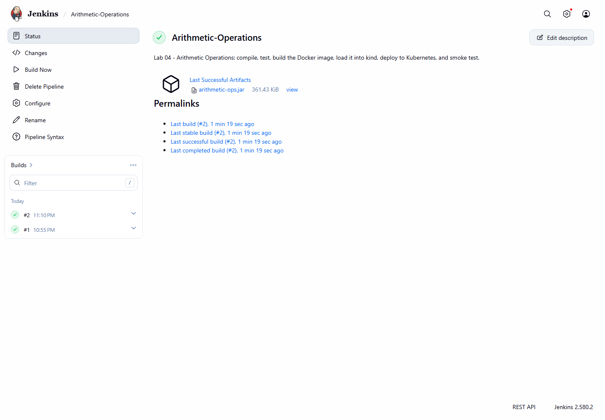
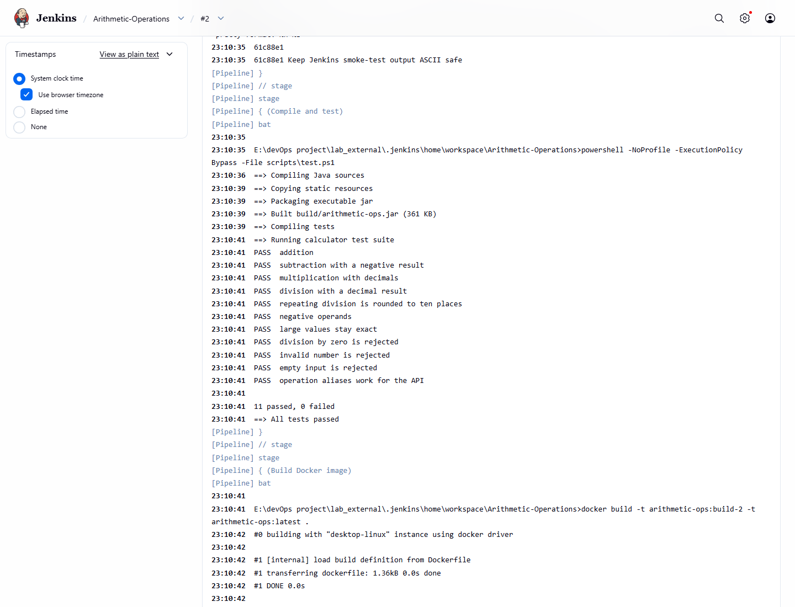
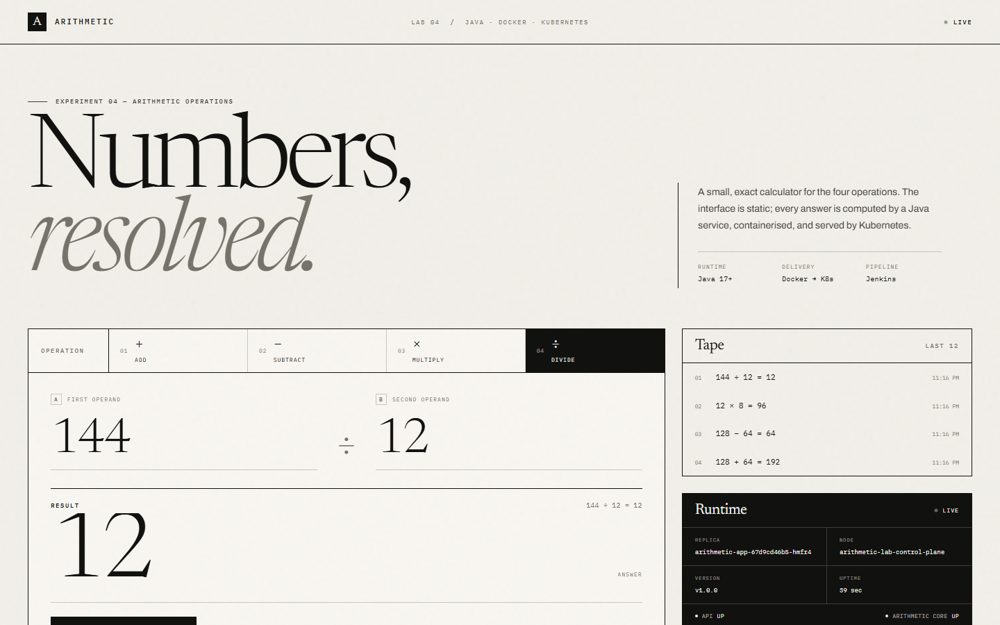
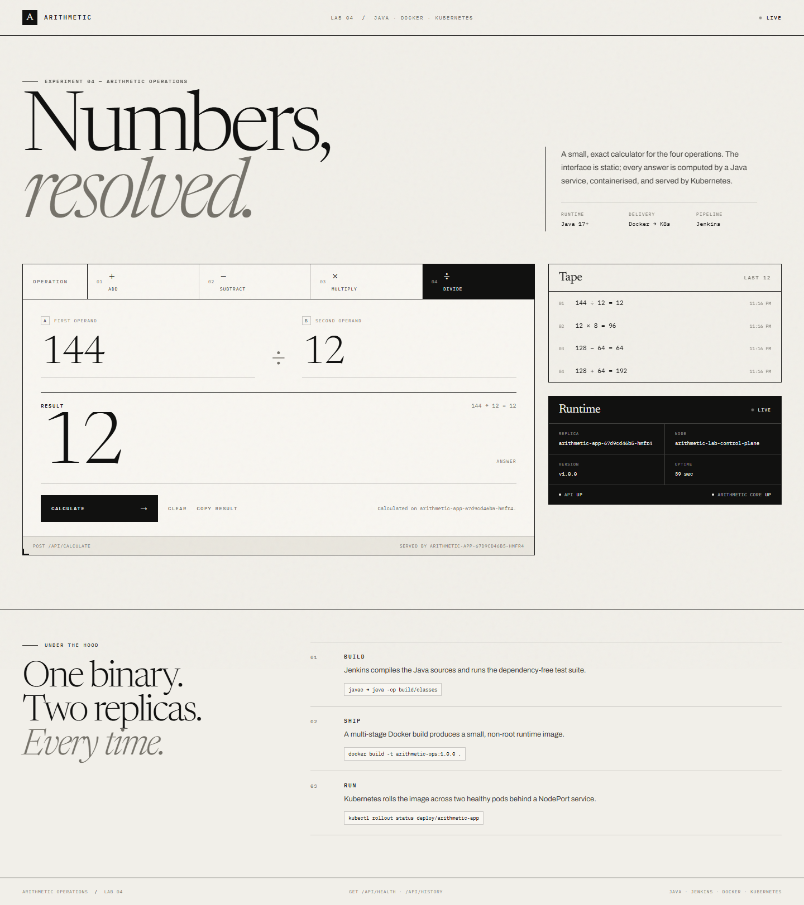
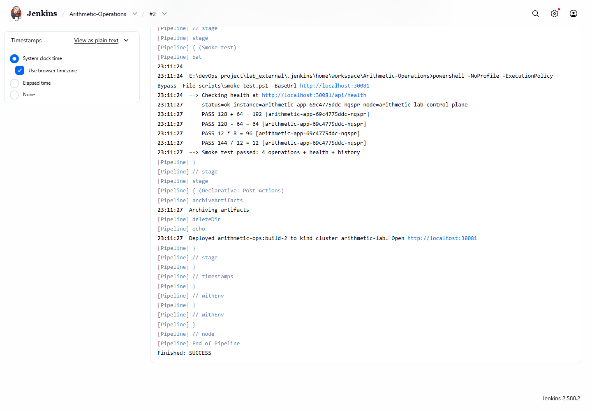
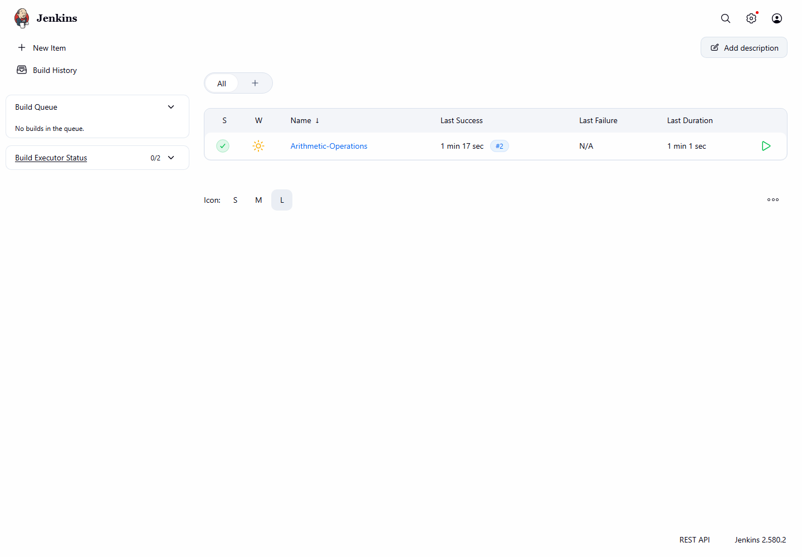

Experiment 04 — DevOps laboratory
Arithmetic
operations.
A precise Java calculator, delivered from a Git commit to a running Kubernetes service.
To write a Java program that performs addition, subtraction, multiplication and division, upload it to GitHub using Git, configure a Jenkins job to build and execute it, create a Docker image, and deploy the containerised service to Kubernetes.
Arithmetic Operations — implement the four operations, publish the program, run it through Jenkins, package it with Docker, and expose it through Kubernetes.
00
One commit. Four operations.
Two replicas.
The application is deliberately small so the delivery path is visible. A Java service owns the arithmetic and the static interface. Jenkins produces a versioned image. Kubernetes runs two copies behind a NodePort service.
public repository
image build
non-root runtime
rolling update
browser console
Design noteThe interface never performs arithmetic in JavaScript. Every answer is a request to the Java API, and the Runtime panel reports the replica that served it. That single design choice makes Docker and Kubernetes visible during the demo.
4(a)
Program & GitHub
From an empty folder to a public repository that Jenkins can clone. The application is written in plain Java 17-compatible source and has no external dependencies.
Install the toolchain and verify it
Install a JDK, Git, Docker Desktop, kubectl, kind and Jenkins. Sign in to GitHub. Open PowerShell in the project directory and verify each tool before writing code.
PS> java -version
java version "25" 2025-09-16 LTS
Java(TM) SE Runtime Environment (build 25+37-LTS-3491)
Java HotSpot(TM) 64-Bit Server VM (build 25+37-LTS-3491, mixed mode, sharing)
PS> javac -version
javac 25
PS> git --version
git version 2.56.0.windows.4
PS> docker --version
Docker version 29.7.2, build a7dcaa6
PS> kubectl version --client
Client Version: v1.36.1
Kustomize Version: v5.8.1
PS> kind version
kind v0.33.0 go1.26.7 windows/amd64The local JDK is 25, but the source is compiled with --release 17 so the program remains compatible with Java 17 and newer. The runtime image uses Java 21.
Create the project folder and layout
Create a folder named Arithmetic-Operations and open it in VS Code. The layout separates the arithmetic core, the HTTP service, the browser assets and the delivery files.
Arithmetic-Operations/
├── src/main/java/com/arithmetic/
│ ├── Calculator.java arithmetic core and validation
│ └── App.java HTTP server, API and static files
├── src/main/resources/static/ index.html · styles.css · app.js · fonts
├── src/test/java/com/arithmetic/CalculatorTest.java
├── k8s/ namespace · deployment · service · kind config
├── scripts/ build · test · run · deploy · smoke test
├── docs/ writeup · runbook · screenshots
├── Dockerfile
├── Jenkinsfile
└── README.mdWrite the arithmetic service
Calculator.java is a pure, testable core. It uses BigDecimal rather than double, rejects division by zero, normalises trailing zeros and accepts operation aliases such as +, -, * and /.
private static final MathContext DIVISION_CONTEXT =
new MathContext(16, RoundingMode.HALF_UP);
private static final int DIVISION_SCALE = 10;
public static Result calculate(BigDecimal a, BigDecimal b, Operation operation) {
if (a == null || b == null) {
throw new IllegalArgumentException("Both operands are required.");
}
if (operation == null) {
throw new IllegalArgumentException("Choose an operation.");
}
BigDecimal value = switch (operation) {
case ADD -> a.add(b);
case SUBTRACT -> a.subtract(b);
case MULTIPLY -> a.multiply(b);
case DIVIDE -> {
if (b.signum() == 0) {
throw new ArithmeticException("Division by zero is undefined.");
}
yield a.divide(b, DIVISION_SCALE, RoundingMode.HALF_UP)
.round(DIVISION_CONTEXT);
}
};
return new Result(a, b, operation, normalise(value));
}App.java exposes the core through a small HTTP layer built on com.sun.net.httpserver. Nothing outside the JDK is required.
| Method | Route | Purpose |
|---|---|---|
| GET | / | Calculator interface and static assets |
| GET | /api/health | Readiness/liveness payload for Kubernetes |
| GET | /api/history | Last 12 calculations held by this replica |
| GET, POST | /api/calculate | Accepts a, b and op; returns JSON |
The full source is in the public repository: github.com/Ksiri03/Arithmetic-Operations/tree/main/src.
Compile, test and run locally
The scripts locate a complete JDK, compile the sources, copy the static assets, package an executable jar and run the zero-dependency test suite.
PS> powershell -ExecutionPolicy Bypass -File scripts\build.ps1
PS> powershell -ExecutionPolicy Bypass -File scripts\test.ps1
PS> powershell -ExecutionPolicy Bypass -File scripts\run.ps1==> Compiling Java sources
==> Copying static resources
==> Packaging executable jar
==> Built build/arithmetic-ops.jar (361 KB)
==> Compiling tests
==> Running calculator test suite
PASS addition
PASS subtraction with a negative result
PASS multiplication with decimals
PASS division with a decimal result
PASS repeating division is rounded to ten places
PASS negative operands
PASS large values stay exact
PASS division by zero is rejected
PASS invalid number is rejected
PASS empty input is rejected
PASS operation aliases work for the API
11 passed, 0 failed
==> All tests passedOpen http://localhost:8080. The service prints its instance name and health URL at startup. The UI starts with 128 + 64; every calculation is sent to the Java API.

Create the GitHub repository
- Open github.com and sign in.
- Click + → New repository.
- Name the repository Arithmetic-Operations.
- Select Public and click Create repository.
- Do not add a README on GitHub; the local project already contains one.
The repository URL used by Jenkins is https://github.com/Ksiri03/Arithmetic-Operations.
Upload the program using Git
Run these commands in the project folder. The branch is renamed to main before the first push so Jenkins can track */main.
PS> git init
PS> git add .
PS> git commit -m "Initial arithmetic operations application with Docker and Kubernetes"
PS> git branch -M main
PS> git remote add origin https://github.com/Ksiri03/Arithmetic-Operations.git
PS> git push -u origin mainPS> git remote -v
origin https://github.com/Ksiri03/Arithmetic-Operations.git (fetch)
origin https://github.com/Ksiri03/Arithmetic-Operations.git (push)
PS> git log --oneline -3
61c88e1 Keep Jenkins smoke-test output ASCII safe
63b6bd0 Initial arithmetic operations application with Docker and KubernetesA second commit made the smoke-test output safe for the Windows console encoding. Both commits are on main and visible in the repository.
Verify the repository
Open the repository in a browser. The source folders, Dockerfile, Jenkinsfile, Kubernetes manifests and documentation should all be present.

4(b)
Jenkins & Docker
The repository becomes a repeatable release: Jenkins checks out the commit, tests it, builds a versioned image, loads it into the cluster and verifies the live service.
Create the Dockerfile
The image is built in two stages. The first stage compiles and packages the jar; the second ships only a JRE, the jar and a non-root user.
# syntax=docker/dockerfile:1
FROM eclipse-temurin:21-jdk-alpine AS build
WORKDIR /src
COPY src/main/java ./src/main/java
COPY src/main/resources ./src/main/resources
RUN find src/main/java -name '*.java' > sources.txt \
&& mkdir -p /out \
&& javac --release 17 -encoding UTF-8 -d /out @sources.txt \
&& cp -R src/main/resources/. /out/ \
&& jar --create --file /app.jar --main-class com.arithmetic.App -C /out .
FROM eclipse-temurin:21-jre-alpine
WORKDIR /app
COPY --from=build /app.jar /app/app.jar
ENV PORT=8080 \
JAVA_TOOL_OPTIONS="-XX:MaxRAMPercentage=75 -XX:+UseSerialGC -Djava.io.tmpdir=/tmp"
USER 10001:10001
EXPOSE 8080
ENTRYPOINT ["java", "-jar", "/app/app.jar"]- Build stage — JDK 21 Alpine, compiles with --release 17, copies static assets, creates an executable jar.
- Runtime stage — JRE 21 Alpine, no compiler and no source code in the final image.
- Non-root — runs as UID/GID 10001. Kubernetes adds a read-only root filesystem and drops all Linux capabilities.
Add the Dockerfile to GitHub
Commit the Dockerfile before configuring Jenkins, so the pipeline can retrieve everything it needs from the repository.
PS> git add Dockerfile
PS> git commit -m "Add Dockerfile"
PS> git push origin mainStart Docker Desktop and verify the engine
Open Docker Desktop and wait until it reports Engine running. Then verify the client and the engine, not only the client.
PS> docker --version
Docker version 29.7.2, build a7dcaa6
PS> docker info --format '{{.ServerVersion}}'
29.7.2Build and test the image manually
Build the image before involving Jenkins. This isolates Docker problems from Jenkins problems.
PS> docker build -t arithmetic-ops:1.0.0 .
PS> docker images | findstr arithmetic-ops
arithmetic-ops 1.0.0 af7ec66b6b77 287MB
PS> docker run -d --name arithmetic-local-demo -p 8081:8080 arithmetic-ops:1.0.0
PS> curl.exe "http://localhost:8081/api/calculate?a=12&b=8&op=multiply"{"a":"12","b":"8","operation":"multiply","label":"Multiplication",
"symbol":"×","result":"96","expression":"12 × 8 = 96",
"servedBy":"783adb7fdb2b","at":"2026-11-17T17:47:36Z"}The servedBy value is the container ID when running under Docker, and the pod name when running under Kubernetes. That is how the runtime panel proves where the answer came from.
Install and configure Jenkins
Jenkins 2.580.2 is started as a WAR on the host, because it must reach Docker Desktop, kind and kubectl directly. The home directory and temporary directory are placed on E: so the built-in node stays online.
$env:JENKINS_HOME = "E:\devOps project\lab_external\.jenkins\home"
& "C:\Program Files\Java\jdk-25\bin\java.exe" `
'-Djava.io.tmpdir=E:\devOps project\lab_external\.jenkins\tmp' `
-Djenkins.install.runSetupWizard=false `
-jar 'E:\devOps project\lab_external\.jenkins\jenkins.war' `
--httpPort=8080Open http://localhost:8080. Retrieve the initial administrator password from JENKINS_HOME\secrets\initialAdminPassword, install the suggested plugins and create the administrator account.
- Git — clone the repository.
- Pipeline — run the declarative Jenkinsfile.
- Timestamper — timestamp every console line.
- Build tools on PATH — java, javac, jar, git, docker, kind, kubectl, powershell.
Create the Jenkins job
The recorded job is a Pipeline job named Arithmetic-Operations. The reference-style Freestyle equivalent is included in Appendix B and in docs/JENKINS.md; the commands are the same.
- Open the Jenkins dashboard → New Item.
- Enter Arithmetic-Operations.
- Select Pipeline and click OK.
- Under Pipeline, choose Pipeline script from SCM.
- Set SCM to Git, repository URL to https://github.com/Ksiri03/Arithmetic-Operations.git, branch to */main, and script path to Jenkinsfile.
- Save and click Build Now.

Connect Jenkins with GitHub
| Setting | Value |
|---|---|
| Source Code Management | Git |
| Repository URL | https://github.com/Ksiri03/Arithmetic-Operations.git |
| Branch Specifier | */main |
| Credentials | None — the repository is public |
| Script Path | Jenkinsfile |
| Build Trigger | Manual for the demonstration |
No webhook is required for the live demo. A webhook would make the pipeline run automatically on every push, but a manual Build Now is easier to narrate in front of faculty.
Configure the build steps
The declarative Jenkinsfile has six stages. Each one produces evidence in the console.
| Stage | Command or action | Evidence |
|---|---|---|
| Checkout | checkout scm | Commit hash and message |
| Compile and test | scripts\test.ps1 | 11 tests passed |
| Build Docker image | docker build -t arithmetic-ops:build-2 . | Image ID and size |
| Load into kind | kind load docker-image … | Image present on node |
| Deploy | kubectl apply -k k8s | Rollout complete |
| Smoke test | scripts\smoke-test.ps1 | 4 operations + health + history |
stage('Compile and test') {
steps {
bat 'powershell -NoProfile -ExecutionPolicy Bypass -File scripts\\test.ps1'
}
}
stage('Build Docker image') {
steps {
bat 'docker build -t %APP_NAME%:%IMAGE_TAG% -t %APP_NAME%:latest .'
bat 'docker image inspect %APP_NAME%:%IMAGE_TAG% --format "image={{.Id}} size={{.Size}}"'
}
}
stage('Smoke test') {
steps {
bat 'powershell -NoProfile -ExecutionPolicy Bypass -File scripts\\smoke-test.ps1 -BaseUrl %APP_URL%'
}
}The image tag is build-${BUILD_NUMBER}, not latest, when Kubernetes is updated. This makes each rollout traceable to one Jenkins build.
Execute the Jenkins job
Click Build Now and open the new build → Console Output. Build #2 completed in 1 minute 1 second.


==> Running calculator test suite
...
11 passed, 0 failed
==> All tests passed
[Build Docker image]
docker build -t arithmetic-ops:build-2 -t arithmetic-ops:latest .
image=sha256:3e2ef8bb383f... size=74581872
[Load image into kind]
Image: "arithmetic-ops:build-2" not yet present on node, loading...
[Deploy to Kubernetes]
deployment.apps/arithmetic-app image updated
Waiting for deployment "arithmetic-app" rollout to finish...
deployment "arithmetic-app" successfully rolled out
[Smoke test]
==> Checking health at http://localhost:30081/api/health
status=ok instance=arithmetic-app-69c4775ddc-nqspr
PASS 128 + 64 = 192
PASS 128 - 64 = 64
PASS 12 * 8 = 96
PASS 144 / 12 = 12
==> Smoke test passed: 4 operations + health + history
Deployed arithmetic-ops:build-2 to kind cluster arithmetic-lab.
Open http://localhost:30081
Finished: SUCCESSVerify the image and a container
Confirm the image produced by Jenkins exists locally and can serve a calculation on its own, without Kubernetes.
PS> docker images | findstr arithmetic-ops
arithmetic-ops build-2 3e2ef8bb383f 287MB
arithmetic-ops latest 3e2ef8bb383f 287MB
arithmetic-ops 1.0.0 af7ec66b6b77 287MB
PS> docker run --rm -d --name arithmetic-check -p 8081:8080 arithmetic-ops:build-2
PS> curl.exe http://localhost:8081/api/health{"status":"ok","service":"arithmetic-operations","version":"1.0.0",
"instance":"783adb7fdb2b","node":"local-machine","javaVersion":"21.0.13",
"checks":{"application":"UP","arithmeticCore":"UP"}}This is the same binary that Kubernetes serves. The only change is the amount of orchestration around it.
4(c)
Kubernetes
The image is loaded into a local kind cluster and declared as a two-replica Deployment behind a NodePort Service. Readiness and liveness are wired to the same health endpoint Jenkins tests.
Write the Kubernetes manifests
The Deployment carries the application configuration, probes, resource requests and a restrictive security context. The Service exposes port 80 internally and maps it to a fixed NodePort.
spec:
replicas: 2
strategy:
type: RollingUpdate
rollingUpdate:
maxSurge: 1
maxUnavailable: 0
template:
spec:
containers:
- name: app
image: arithmetic-ops:latest
imagePullPolicy: IfNotPresent
ports:
- name: http
containerPort: 8080
env:
- name: POD_NAME
valueFrom:
fieldRef:
fieldPath: metadata.name
- name: NODE_NAME
valueFrom:
fieldRef:
fieldPath: spec.nodeName
readinessProbe:
httpGet: { path: /api/health, port: http }
livenessProbe:
httpGet: { path: /api/health, port: http }
securityContext:
allowPrivilegeEscalation: false
readOnlyRootFilesystem: true
capabilities: { drop: ["ALL"] }apiVersion: v1
kind: Service
metadata:
name: arithmetic-service
namespace: arithmetic
spec:
type: NodePort
selector:
app: arithmetic-app
ports:
- name: http
protocol: TCP
port: 80
targetPort: http
nodePort: 30081The kind cluster maps container port 30081 to host port 30081 in k8s/kind-config.yaml. That single mapping is what makes the NodePort reachable from the browser.
Create the kind cluster
Docker Desktop must be running. Create the cluster once; the Jenkins pipeline reuses it on later builds.
PS> kind create cluster --name arithmetic-lab --config k8s\kind-config.yaml
PS> kind get clusters
arithmetic-lab
PS> docker ps --format "table {{.Names}}\t{{.Image}}\t{{.Ports}}"
NAMES IMAGE PORTS
arithmetic-lab-control-plane kindest/node:v1.37.0 0.0.0.0:30081->30081/tcp,
127.0.0.1:51515->6443/tcpLoad the image and deploy
kind nodes cannot pull a local image from the host Docker daemon, so the image is loaded directly into the node before the Deployment references it.
PS> kind load docker-image arithmetic-ops:build-2 --name arithmetic-lab
PS> kubectl apply -k k8s
namespace/arithmetic unchanged
service/arithmetic-service unchanged
deployment.apps/arithmetic-app configured
PS> kubectl -n arithmetic set image deployment/arithmetic-app app=arithmetic-ops:build-2
deployment.apps/arithmetic-app image updated
PS> kubectl -n arithmetic rollout status deployment/arithmetic-app --timeout=180s
Waiting for deployment "arithmetic-app" rollout to finish...
deployment "arithmetic-app" successfully rolled outThe rolling update uses maxUnavailable: 0. Kubernetes starts a new pod, waits for readiness, and only then terminates an old one.
Verify the Deployment, pods and Service
PS> kubectl -n arithmetic get deployment,pods,svc -o wide
NAME READY UP-TO-DATE AVAILABLE IMAGES
deployment.apps/arithmetic-app 2/2 2 2 arithmetic-ops:build-2
NAME READY STATUS IP NODE
pod/arithmetic-app-67d9cd46b5-hmfr4 1/1 Running 10.244.0.17 arithmetic-lab-control-plane
pod/arithmetic-app-67d9cd46b5-q9bz2 1/1 Running 10.244.0.18 arithmetic-lab-control-plane
NAME TYPE CLUSTER-IP PORT(S) AGE
service/arithmetic-service NodePort 10.96.99.132 80:30081/TCP 34mBoth replicas are 1/1 Running on the kind control-plane node. The Service has a cluster IP for internal traffic and a node port for the host.
Open the live application and run the smoke test
Open http://localhost:30081. The Runtime card shows a real pod name and the node reported by the Downward API. Perform the four operations and verify the tape.

PS> curl.exe http://localhost:30081/api/health
{"status":"ok","service":"arithmetic-operations","version":"1.0.0",
"instance":"arithmetic-app-67d9cd46b5-hmfr4",
"node":"arithmetic-lab-control-plane","javaVersion":"21.0.13",
"checks":{"application":"UP","arithmeticCore":"UP"}}
PS> powershell -ExecutionPolicy Bypass -File scripts\smoke-test.ps1
==> Checking health at http://localhost:30081/api/health
status=ok instance=arithmetic-app-67d9cd46b5-hmfr4
PASS 128 + 64 = 192
PASS 128 - 64 = 64
PASS 12 * 8 = 96
PASS 144 / 12 = 12
==> Smoke test passed: 4 operations + health + historyTo prove that Kubernetes owns the desired state, restart the Deployment. A new ReplicaSet is created, the pods are replaced, and the service remains available throughout.
PS> kubectl -n arithmetic rollout restart deployment/arithmetic-app
deployment.apps/arithmetic-app restarted
PS> kubectl -n arithmetic rollout status deployment/arithmetic-app --timeout=180s
Waiting for deployment "arithmetic-app" rollout to finish...
deployment "arithmetic-app" successfully rolled out4(d)
Ten minutes, live.
The application is already running. The only slow part of the demonstration is the Jenkins build, which gives you time to explain each stage as it appears in the console.
Keep one terminal ready. These are the only commands needed during the demonstration. Everything else is already built.
PS> docker images | findstr arithmetic-ops
PS> docker run --rm -d --name demo -p 8081:8080 arithmetic-ops:1.0.0
PS> curl.exe "http://localhost:8081/api/calculate?a=144&b=12&op=divide"
PS> docker rm -f demo
PS> kubectl -n arithmetic get deployment,pods,svc -o wide
PS> kubectl -n arithmetic rollout restart deployment/arithmetic-app
PS> kubectl -n arithmetic rollout status deployment/arithmetic-app --timeout=180s
PS> kubectl -n arithmetic get podsWhat to say at each stage
| Stage | One sentence to say |
|---|---|
| Checkout | “Jenkins clones the same commit that is visible on GitHub, so the build is reproducible.†|
| Compile and test | “Eleven tests must pass before an image is allowed to exist.†|
| Docker build | “The JDK stays in the build stage; the runtime image contains only the JRE and the jar.†|
| kind load | “The image is loaded into the cluster node because it is local and has not been pushed to a registry.†|
| Deploy | “Kubernetes performs a rolling update; maxUnavailable is zero, so one replica is always ready.†|
| Smoke test | “The pipeline tests the live NodePort, not a local process: four operations, health and history.†|
If something goes down
| Symptom | Recovery |
|---|---|
| Jenkins node offline | Restart Jenkins with -Djava.io.tmpdir on E:; check free disk space. |
| App unreachable | kubectl -n arithmetic get pods,svc; then kubectl logs deployment/arithmetic-app. |
| Image missing in kind | kind load docker-image arithmetic-ops:build-2 --name arithmetic-lab, then restart the rollout. |
| Port 30081 occupied | Change the NodePort and the kind port mapping, recreate the cluster, rerun the pipeline. |
| Smoke test fails | The previous pods stay live under the rolling update; inspect events and logs before retrying. |
Viva, in one line each
- Why no Spring Boot?
- The JDK HTTP server keeps the build dependency-free, offline and small. Spring Boot would be appropriate for a larger service.
- Why BigDecimal?
- Decimal arithmetic stays exact; binary floating point cannot represent values such as 0.1 exactly. Division uses scale 10 with HALF_UP.
- What happens on divide by zero?
- The API returns HTTP 400 with a clear error; the UI shows it and does not add the operation to the tape.
- Why a multi-stage image?
- The compiler and source are excluded from the runtime. The final image only needs a JRE and the jar.
- Why non-root and read-only?
- They reduce the impact of a compromised process. The app only writes to a small in-memory /tmp.
- Why two replicas?
- It demonstrates rolling updates and service load balancing, and removes a single point of failure.
- Why NodePort?
- It is the simplest way to expose a local kind cluster. Production would use an Ingress with DNS and TLS.
- Where is state stored?
- Only the last 12 calculations per replica, in memory, deliberately. A restart clears the tape.
- How does Jenkins deploy?
- Build, test, load the image into kind, apply the manifests, set the immutable image tag, wait for the rollout, smoke test.
- How would you productionise it?
- Registry plus digest pinning, Ingress/TLS, Helm overlays, HPA, network policies, external config and secrets, logs and metrics.
Full runbookThe complete eight-to-ten-minute script, recovery commands and longer viva notes are in docs/DEMO.md. The Jenkins configuration, including the manual Freestyle equivalent, is in docs/JENKINS.md.
05
Output screens
The evidence is deliberately end to end: the public source, the green build, the live browser console and the Kubernetes runtime. All screenshots were captured from the running lab, not mocked.



Print noteThe screenshots are full-resolution captures. On paper, the large console and application figures remain legible at A4 width; the two smaller Jenkins screens are included as context rather than as the primary proof.
Result
The question,
closed.
The Java program is public on GitHub, Jenkins builds and tests it, Docker packages it as an immutable image, and Kubernetes serves two replicas behind a NodePort. The live service answered all four operations and both probes.
Arithmetic-Operations
non-root · JRE 21
2/2 ready
localhost:30081
Appendix A — Command reference
Copy · run · verifycd "E:\devOps project\lab_external\Arithmetic-Operations"
powershell -ExecutionPolicy Bypass -File scripts\build.ps1
powershell -ExecutionPolicy Bypass -File scripts\test.ps1
powershell -ExecutionPolicy Bypass -File scripts\run.ps1docker build -t arithmetic-ops:1.0.0 .
docker run --rm -d --name arithmetic-demo -p 8081:8080 arithmetic-ops:1.0.0
curl.exe http://localhost:8081/api/health
docker rm -f arithmetic-demokind create cluster --name arithmetic-lab --config k8s\kind-config.yaml
kind load docker-image arithmetic-ops:1.0.0 --name arithmetic-lab
kubectl apply -k k8s
kubectl -n arithmetic set image deployment/arithmetic-app app=arithmetic-ops:1.0.0
kubectl -n arithmetic rollout status deployment/arithmetic-app --timeout=180s
kubectl -n arithmetic get deployment,pods,svc -o wide
curl.exe "http://localhost:30081/api/calculate?a=144&b=12&op=divide"kubectl -n arithmetic rollout restart deployment/arithmetic-app
kubectl -n arithmetic rollout status deployment/arithmetic-app --timeout=180sAppendix B — Freestyle job equivalent
Reference formatIf the lab record requires the reference-style Freestyle project, create Arithmetic-Operations-Freestyle, point Source Code Management → Git at the repository and branch */main, then add one Execute Windows batch command:
echo ===== 1. Compile and test =====
powershell -NoProfile -ExecutionPolicy Bypass -File scripts\test.ps1
echo ===== 2. Build Docker image =====
docker build -t arithmetic-ops:freestyle-%BUILD_NUMBER% -t arithmetic-ops:latest .
docker images | findstr arithmetic-ops
echo ===== 3. Run and test the API =====
docker rm -f arithmetic-freestyle >nul 2>&1
docker run -d --name arithmetic-freestyle -p 8082:8080 arithmetic-ops:latest
timeout /t 4 /nobreak >nul
powershell -NoProfile -Command "(Invoke-RestMethod 'http://localhost:8082/api/health').status"
powershell -NoProfile -Command "(Invoke-RestMethod 'http://localhost:8082/api/calculate?a=144&b=12&op=divide').result"
docker rm -f arithmetic-freestyle
echo ===== 4. Load into kind and deploy =====
kind load docker-image arithmetic-ops:freestyle-%BUILD_NUMBER% --name arithmetic-lab
kubectl apply -k k8s
kubectl -n arithmetic set image deployment/arithmetic-app app=arithmetic-ops:freestyle-%BUILD_NUMBER%
kubectl -n arithmetic rollout status deployment/arithmetic-app --timeout=180s
kubectl -n arithmetic get pods -o wideStop after section 3 if the faculty only requires the reference scope: compile, execute and build the Docker image. Section 4 adds the Kubernetes part of this lab.
Appendix C — Evidence index
Repository files| File | What it proves |
|---|---|
| src/main/java/com/arithmetic/Calculator.java | BigDecimal arithmetic, validation and division-by-zero handling |
| src/main/java/com/arithmetic/App.java | HTTP routes, health, history and static file serving |
| Dockerfile | Multi-stage, non-root runtime image |
| Jenkinsfile | Six-stage CI/CD pipeline with smoke test |
| k8s/deployment.yaml | Two replicas, probes, resources and security context |
| k8s/service.yaml | NodePort 30081 exposing the application |
| jenkins-build-2-console.txt | Complete Jenkins build #2 console log |
| docs/JENKINS.md | Pipeline and manual Freestyle configuration |
| docs/DEMO.md | Ten-minute faculty demonstration runbook |
| screenshots/ | GitHub, Jenkins and live Kubernetes captures |